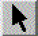

|  |
Pick Mode and ViewMode are the two fundamental interaction modes of the mouse in the Renderer.
Note:
You can also switch between pick mode
and view mode via
|
Pick Mode
| You can select a geometry object (in pick mode and and in view mode) by clicking on its name in the GeometryObjects list box, too. |